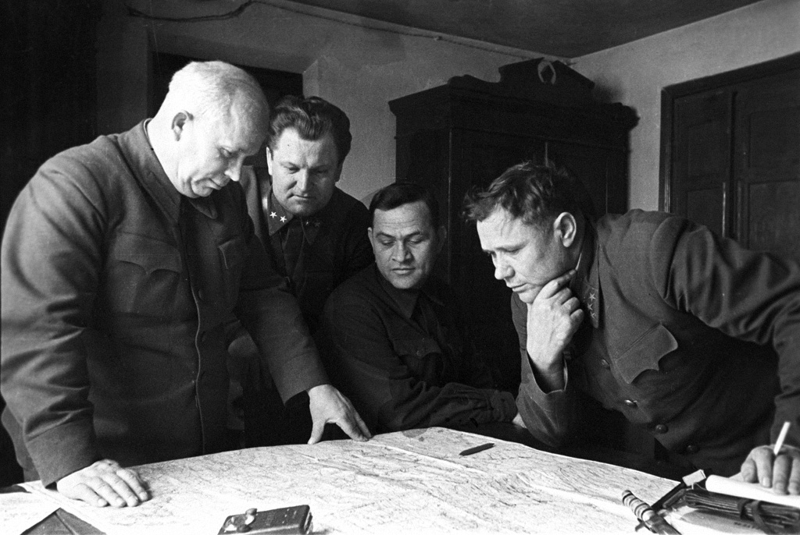

Khrushchev's polices may be flawed, but his rule saw through the Cold War years.
Here is a time line of Mr. Khrushchev's life:
"Freedom" in capitalist countries exists only for those who possess money and who consequently hold power."
-- Nikita Khuruschev
"Mr. Khrushchev opened the doors and windows of a petrified structure. He let in fresh air and fresh ideas, producing changes which time already has shown are irreversible and fundamental"
-- New York Times on the death of Mr. Khrushchev
If you have time, let's read more about this illustrious soviet soldier on his Wikipedia entry.